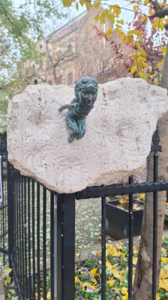

Az erzsébetvárosi Szenes Hanna téren került elhelyezésre Kolodko Mihály egyik alkotása, a Szenes Hanna miniszobor. Szenes Hanna Magyarországon született egy zsidó családban. Miután kitűnően érettségizett, Palesztinába emigrált. Itt szembesült a II. világháború borzalmaival. A verseket is író hölgy 1943-ban csatlakozott a brit hadsereghez ejtőernyősként. Egy évvel később Magyarországra küldték, hogy megakadályozza a magyar zsidók deportálását. Sajnos már a határon elfogták és napokon keresztül kínozták. Azonban a 23 éves fiatal nő nem volt hajlandó elárulni semmit. 1944-ben halálra ítélték, és a Margit Körúti Katonai Fogházban kivégezték. forrás:szallas.hu
